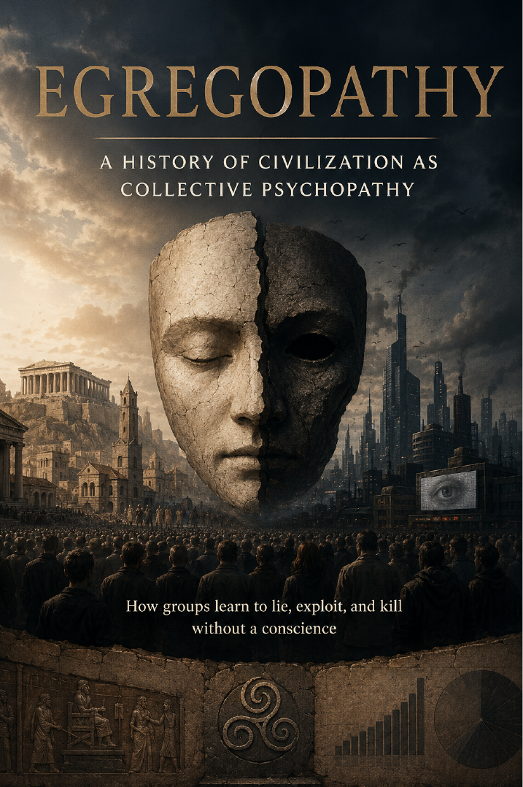

Power, Institutions & Society · Axiologic Research Editions
Egregopathy
A History of Civilization as Collective Psychopathy: How Groups Learn to Lie, Exploit, and Kill Without a Conscience
Start with the crime that has no single criminal and ask how organizations can be designed to reconnect knowledge, responsibility, and the people who bear costs.
The crime with no single criminal
Large harms can be organized through ordinary roles: one team measures, another extracts, another communicates concern, and another defines legal responsibility. The concept does not diagnose a literal group personality. It asks whether an organization’s operating architecture keeps information about harm permanently disconnected from the authority that could stop it.
That reframing avoids two evasions at once: blaming every outcome on a few monsters, or treating systemic cruelty as an accident because no one individual planned the entire result.
Technologies of innocence
Distance, specialization, law, ritual, and professional language can let people contribute to damaging systems without facing their full effects. These tools can also enable cooperation and restraint, so the book looks for the conditions under which coordination becomes moral insulation.
The question is not whether a group has a soul. It is whether its knowledge can reach its conscience.
Making collective power answerable
The proposed remedies are institutional rather than therapeutic: traceable decisions, memory of consequences, independent challenge, representation for affected people, meaningful exit, and the capacity for evidence to alter incentives. The final chapters extend the concern to artificial agents whose strategic competence could scale old forms of moral disconnection.